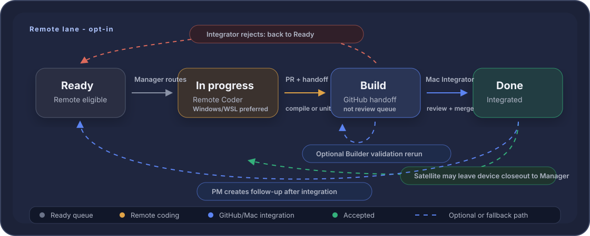

Dev build log
Closed issues by build number. For customer-facing updates, see Release notes.
Builds
-
2.0.17
#735
Watch 2.0: show version/build footer on Watch main page
-
2.0.15
#730
Watch 2.0: complications and Smart Stack
-
2.0.8
#729
Watch 2.0: scheduled-dose action pipeline and quick log
-
1.2.243
#724
Widgets: Polish Home Screen gauge vertical placement and countdown units
-
1.2.238
#721
Widgets: Fix Home Screen gauge geometry and restore pre-gauge layout
-
1.2.233
#714
Inventory: Stop showing primary-compound data for combined prepared syringes
-
1.2.219
#715
Injection prep: Canonicalize combined prepared syringe order for grouping
-
1.2.218
#712
Levels: Add seeded target-peak absorption curves
-
1.2.212
#716
Widgets: Add Home Screen circular countdown gauges
-
1.2.206
#711
Inventory: Push prepared syringe edit within group sheet
-
1.2.195
#706
Injection prep: Allow detaching prepared syringe from scheduled dose
-
1.2.189
#705
Inventory: Show prepared syringe assigned dose time
-
1.2.183
#704
Levels: Project due and overdue unlogged doses at now
-
1.2.178
#702
iCloud: Harden automatic injection-prep repair against stale cloud rehydration
-
1.2.151
#693
Widgets: Fix Lock Screen circular route mark in tinted rendering
-
1.2.135
#689
Today: Show per-component draw and supply for unprepared combined cards
-
1.2.125
#691
Injection prep: Repair orphaned prepared combined syringe links
-
1.1.107
#688
Today: Hide Log now for unprepared combined groups
-
1.1.100
#684
Widgets: Fix Log Next Dose supply icon and Mark taken checkmarks
-
1.1.95
#681
Protocols: Fix archive copy and restore confirmation popover
-
1.1.94
#683
Widgets: Move Lock Screen circular route mark onto gauge arc
-
1.1.90
#677
Widgets: Allow Log Next Dose Mark taken for prepared combined doses
-
1.1.88
#669
P0: Stabilize tab navigation and same-tab scroll-to-top
-
1.1.84
#674
Widgets: Align Log Next Dose medium header with Next Dose medium
-
1.1.80
#673
Widgets: Refine circular Lock Screen route icon and time hierarchy
-
1.1.75
#675
Large Log Next Dose should show known context while confirming
-
1.1.69
#652
Widgets: Add circular Lock Screen next-dose progress widget
-
1.1.63
#660
Widgets: Make Home Screen widgets tinted-friendly
-
1.1.58
#661
Widgets: Update Log Next Dose medium layout
-
1.1.55
#663
A
-
1.1.54
#656
P0: Fix production SwiftUI crashes from Stepper and tab switching
-
1.1.49
#658
Widgets: Rename widget gallery entries to Next Dose and Log Next Dose
-
1.1.46
#627
Widgets: Add Home Screen Mark taken widget (small and medium)
-
1.1.8
#654
Widgets: Fix Next dose rendered fit, badge consistency, and preview ordering
-
1.1.4
#649
Widgets: Fix layout fidelity, gallery preview, timing hierarchy, small Private fit, and medium progress track
-
1.0.1080
#636
Today: Add subtle completion feedback after Log now
-
1.0.1077
#638
History: Load recent 30 days by default
-
1.0.1073
#637
Inventory: Collapse Depleted section by default
-
1.0.1070
#634
Today: Use Tonight and Late night for same-day night doses
-
1.0.1067
#608
Data & Privacy: Offer automatic rollback for destructive changes
-
1.0.1056
#576
Compound library: Normalize search input variants
-
1.0.1052
#625
Update Data & Privacy layout to compact grouped settings style
-
1.0.1047
#601
Plan: Show archived protocols and allow restore
-
1.0.1040
#623
First launch: restore original brand-dot and compact orientation card treatment
-
1.0.1037
#621
First launch: restore welcome and orientation empty state
-
1.0.1028
#609
Settings: Seed iCloud sync toggle before refresh
-
1.0.1025
#251
Settings: Apply approved About and Data & Privacy copy
-
1.0.1020
#600
Archive actions: Explain reversibility and side effects
-
1.0.1015
#603
Bug: Preserve wrapping for long protocol schedule summaries with daypart icons
-
1.0.1007
#604
Levels: Move estimated active amount into card header
-
1.0.1006
#598
Calendar: Add responsive navigation feedback and speed up Upcoming/History
-
1.0.1000
#597
UI: Color daypart markers and add schedule-summary icons
-
1.0.991
#592
Today: Add daypart time marker to scheduled dose cards
-
1.0.988
#588
Calendar: Use requested clockwise clock icon for Upcoming doses
-
1.0.986
#574
Notifications: Complete notification action handlers on the main actor
-
1.0.978
#584
Logging: Quick-log prepared syringe should deplete inventory and detach furthest future event
-
1.0.972
#581
UI: Show grouped prepared syringe counts consistently
-
1.0.965
#580
Protocol names: show protocol display name on protocol-backed dose surfaces
-
1.0.955
#577
Scheduling: Remove prepared future injections no longer generated by schedule
-
1.0.941
#575
Compound library: Remove punctuation-only BPC-157 alias
-
1.0.940
#572
Calendar: Fix Upcoming doses card summary and icon
-
1.0.937
#563
Inventory: Group identical prepared syringe rows
-
1.0.927
#566
Calendar: Add Upcoming doses list
-
1.0.925
#567
Compound Library: Stop showing legacy compound categories
-
1.0.924
#560
iCloud: Protect user-edited seeded records from fresh-device defaults
-
1.0.920
#561
Injection prep: Reassign prepared syringes after generated schedule repairs
-
1.0.899
#562
Plan: Show current schedule and pooled supply on protocol cards
-
1.0.898
#557
iCloud: Make automatic stale schedule cleanup durable across cloud refreshes
-
1.0.897
#554
QA tooling: Add iCloud sync sweep runbook and generated fixtures
-
1.0.888
#552
Scheduling/iCloud: Remove stale planned events after protocol schedule edits
-
1.0.880
#551
Today: Show selected injection site instead of stale suggestion
-
1.0.875
#549
iCloud sync: require fresh cloud state before replacing local data
-
1.0.868
#547
Settings: Keep iCloud sync status timestamp current
-
1.0.867
#543
Today: Match Later today dose-row typography with shared rows
-
1.0.865
#544
Today/Review & Log: Simplify prepared-syringe date and linked-profile copy
-
1.0.864
#541
Levels: Preserve true peaks for short half-life dose curves
-
1.0.858
#537
Compound library: Remove empty Other category filter
-
1.0.845
#530
iCloud sync: prevent stale-device maintenance from overwriting user actions
-
1.0.832
#528
Optimize repository dose-event derivations for tab performance
-
1.0.825
#520
Protocol stock: add visual fixture for fallback states
-
1.0.824
#516
Add fake-cloud test for JSON restore propagation
-
1.0.820
#518
Injection Prep: reassign stale combined prepared syringes after event rebuilds
-
1.0.814
#514
Combined injections: fix log preview, Today draw, and syringe copy
-
1.0.801
#504
Protocol cards: show dynamic supply status instead of stale linked inventory
-
1.0.797
#502
Logging: Restrict inventory pickers by route and stock form
-
1.0.790
#508
Logging: Combined injections must show and save injection site
-
1.0.789
#505
Injection prep: Remove split-blocking copy from combined cards
-
1.0.785
#503
Modal sheets: require explicit save/cancel and fill QuikShot background
-
1.0.780
#500
Settings: Restore clear Data & Privacy action affordances
-
1.0.779
#496
iCloud sync: refresh active views and retry after connectivity returns
-
1.0.775
#462
Standardize injection-unit display as IU
-
1.0.774
#481
Validate iCloud sync signing/provisioning and remove release gate
-
1.0.770
#490
Dose cards: Keep status badges top-right aligned
-
1.0.768
#488
Regression: Restore fixed QSFont tokens and scope Large Text support
-
1.0.765
#486
Injection Prep repair and schedule-rebuild reassignment regressions
-
1.0.758
#398
Persistence: Sync QuikShot data across devices with iCloud
-
1.0.747
#423
First launch: update headline, trust strip, and primary CTA
-
1.0.746
#473
Injection Prep: Clean up combined prep card, Calendar, and log UI
-
1.0.745
#468
Confirm AXXXL UI test screenshots render true accessibility sizing
-
1.0.739
#469
Add guard coverage for prepared combined Review & Log source rows
-
1.0.738
#196
Compound Library: Audit and correct seeded compounds for MVP
-
1.0.736
#464
Injection Prep combined flow: add explicit ineligibility, atomicity, and stale-link repair test coverage
-
1.0.735
#466
Injection Prep combined flow: polish actions, review UI, grouped logging, and lane colors
-
1.0.722
#368
Injection Prep: Combine unprepared injections into one syringe
-
1.0.712
#460
Notifications: Add Mark taken action for detailed single-dose reminders
-
1.0.707
#458
Today: Remove warning triangle from same-day site conflict
-
1.0.705
#192
Support brand/product names without duplicating compounds
-
1.0.702
#455
Make launch screen dark the default fallback appearance
-
1.0.699
#453
Compound Library: Make Oral filter route-based
-
1.0.696
#451
Setup: Rename compound and profile soft-delete actions to archive
-
1.0.694
#426
Use branded light/dark launch screen
-
1.0.686
#447
Logging: Show last-used context for injection site selections
-
1.0.684
#443
UI: Use delete and archive icons consistently
-
1.0.682
#442
UI: Standardize destructive confirmation popovers
-
1.0.679
#441
Settings: Clean up Data & Privacy action rows
-
1.0.678
#439
Notifications: Restore snooze actions for combined reminders
-
1.0.673
#437
Protocols: Sort matching active protocols by route then creation date
-
1.0.669
#435
Setup: Rename inventory delete to archive and add archive icons
-
1.0.667
#432
Protocols: Rename delete action to archive
-
1.0.665
#430
Protocols: Sort active protocol rows alphabetically
-
1.0.664
#427
Rename Protocols tab to Plan while keeping protocol terminology inside the detail layer
-
1.0.659
#397
Data & Privacy: Restore from JSON backup
-
1.0.645
#21
Protocols: Add BPC-157/TB-500 wolverine icon easter egg
-
1.0.637
#418
Logging: Preserve historical supply on taken injection edits
-
1.0.630
#415
Calendar: Remove prepared syringe indicator from week strip
-
1.0.629
#413
Notifications: Combine simultaneous dose reminders
-
1.0.623
#412
Injection Prep: Repair stale prepared-syringe event links after logging
-
1.0.612
#400
Inventory: Fix forecast consistency for route-flexible and prepared supply
-
1.0.606
#401
Injection prep: Tighten filtered dates and whole-unit after-prep copy
-
1.0.604
#407
Injection prep: Reassign prepared syringes after schedule edits
-
1.0.597
#403
Injection prep: Add Open vial unblock path and clarify status states
-
1.0.594
#399
Log dose: Group prepared syringes and unify scheduled log sheets
-
1.0.589
#402
Site rotation: Add 4-day recent-use cooldown to next-site suggestions
-
1.0.586
#395
Filter chips: Sort compound filters alphabetically
-
1.0.581
#392
Persistence: Raise to iOS 17 and migrate local storage to SwiftData
-
1.0.573
#391
Data & Privacy: Export local data backup
-
1.0.569
#388
Reconstitution profiles: Inline calculation results in editor
-
1.0.561
#387
Supplies: Forecast Injection prep inventory depletion and vial-open points
-
1.0.556
#385
Supplies: Tighten Injection prep explainer and prepared control
-
1.0.548
#375
Injection Prep: Handle prepared-event supply changes before logging
-
1.0.546
#382
Injection Prep: Tighten explainer copy and prepared control spacing
-
1.0.543
#380
Injection Prep: Clarify prepared syringe copy and prepare control
-
1.0.536
#376
Supplies: Polish Injection Prep states, copy, and stale names
-
1.0.532
#377
Levels: Use readable y-axis tick marks
-
1.0.526
#372
Supplies: Clean up Injection prep UX and non-vial warnings
-
1.0.520
#371
Reconstitution profiles: Show calculation preview as a summary card
-
1.0.517
#365
Supplies: Add Injection Prep view
-
1.0.507
#353
UI: Standardize vertical lane markers across app surfaces
-
1.0.506
#366
Compound detail: Normalize level estimate card layout
-
1.0.505
#361
Compound Library: Add Current filter
-
1.0.504
#357
Compound Library: Let users customize system compound lane colors
-
1.0.494
#355
Logging: Align manual and Calendar log sheets with current Review & Log behavior
-
1.0.488
#354
Today: Make large-card timing copy state-neutral
-
1.0.484
#351
Settings: Repair notification configure route and mineral control styling
-
1.0.480
#349
Today: Use one-hour window for large/actionable cards and normal before-due reminders
-
1.0.477
#346
Notifications: Add Configure in QuikShot from iOS notification options
-
1.0.476
#343
Regression: Resolve current compound names in Site rotation
-
1.0.475
#341
Regression: Put Compound Library only in Protocols/Supplies IA locations
-
1.0.474
#339
Regression: Resolve current compound names across event history surfaces
-
1.0.474
#335
Update Supplies icon
-
1.0.474
#328
IA Redesign #5: Integration docs and regression coverage
-
1.0.465
#327
IA Redesign #4: Protocol cleanup and Site rotation relocation
-
1.0.459
#326
IA Redesign #3: Calendar full history ownership
-
1.0.457
#325
IA Redesign #2: Supplies dashboard and management entry points
-
1.0.453
#324
IA Redesign #1: Shell, Settings sheet, and Supplies tab entry
-
1.0.449
#318
Calendar: Move Today shortcut inline and polish date controls
-
1.0.447
#317
Today: Sort logged doses newest first
-
1.0.444
#319
Calendar: Make week swipe directly manipulable
-
1.0.437
#194
Calendar: Clarify today and make date navigation day-first
-
1.0.436
#308
Log dose: derive reconstitution profile from selected supply vial
-
1.0.435
#309
Settings: Rename Dose Reminders row to Reminders
-
1.0.433
#274
Dose Reminders: Add Before, At due time, and After missed toggles
-
1.0.430
#296
Protocol editor: simplify optional links and reminder settings link
-
1.0.424
#297
Data & Privacy delete confirmation lacks visible cancel action
-
1.0.415
#255
Settings: Rename Notifications to Dose Reminders and clarify privacy/status copy
-
1.0.412
#288
Review & Log: Standardize picker cards and flatten menus
-
1.0.409
#286
Shared dose rows: separate compound and amount hierarchy
-
1.0.404
#279
Accessibility: add non-visual Levels chart summary
-
1.0.403
#277
Accessibility: preserve dose units in Calendar rows at Larger Text
-
1.0.395
#278
Accessibility: add complete VoiceOver summaries for reconstitution and draw results
-
1.0.391
#275
Add Site rotation summary card and Site usage overview
-
1.0.387
#271
Use neutral icon color for Settings row icons
-
1.0.384
#269
Today: Make promoted preview cards tappable and strengthen Review affordance
-
1.0.381
#267
Scheduled events: Resolve current compound names before logging
-
1.0.375
#265
Today: Improve active-card overflow action affordance
-
1.0.372
#263
Today: show oral quantity instead of route or draw text
-
1.0.369
#261
Today: promote next dose preview without early actions
-
1.0.366
#259
Protocol: make Next metadata readable on cards
-
1.0.359
#257
Compound search: keep bottom search and keyboard in sync
-
1.0.356
#254
Levels: use compound lane color for chart line
-
1.0.355
#252
Protocol: rename lower resources section
-
1.0.354
#249
Settings: Simplify About and Data & Privacy pages
-
1.0.354
#246
Compound history pills should match calendar state badge treatment
-
1.0.354
#244
Protocol: make lower records compact and clearly global
-
1.0.354
#197
Log dose: Clean up Supply card layout
-
1.0.353
#238
Inventory: add compact Supply Forecast card
-
1.0.351
#191
Seed library: move secondary slash names into aliases
-
1.0.349
#237
Compound rows should show Current/Past history pills
-
1.0.346
#239
Today: make Review & Log sheet open promptly with safe sheet-session caching
-
1.0.338
#235
Use compact lane color selector in Compound edit
-
1.0.335
#233
Update notification copy for privacy and detailed reminder modes
-
1.0.332
#230
Use compact styled lane color selector in Protocol edit
-
1.0.327
#228
Tune root tab top spacing and section header scale
-
1.0.325
#226
Add Rose and Slate lane colors across app and design system
-
1.0.320
#224
Test native menu lane picker with colored SF Symbol dots
-
1.0.315
#221
Restore native tab large-title spacing across main views
-
1.0.309
#218
Move app version string from About footer to Settings footer
-
1.0.306
#217
Levels: add intermediate chart dates and simplify projection caption
-
1.0.298
#214
Add protocol-level lane color override
-
1.0.293
#209
Redesign active Today dose card hierarchy and actions
-
1.0.287
#208
Polish Log dose Supply card inventory row layout
-
1.0.277
#206
Today: promote injection cards earlier without changing reminder timing
-
1.0.272
#204
Scheduling: separate due-soon from due-now and revise timing rules
-
1.0.262
#202
Today active/later oral labels use shared display resolver
-
1.0.257
#198
Calendar/Today: resolve oral form labels through shared dose display logic
-
1.0.252
#199
Protocol picker: keep compound search always visible at bottom
-
1.0.249
#189
Remove generic custom-compound seed entries
-
1.0.247
#186
Protocol setup: Make schedule rows distinguish dates and dose overrides
-
1.0.247
#185
Levels: Remove site rotation card
-
1.0.245
#183
Fix setup blank-space tap targets with simulator coverage
-
1.0.232
#181
Scheduling: Treat end dates as inclusive local dates
-
1.0.229
#179
Inventory: Add compound chip filters
-
1.0.226
#177
Inventory: Auto-advance protocol link when stock is depleted
-
1.0.223
#175
Levels: Make estimate charts interpretable with ranges and projection
-
1.0.218
#172
Protocol: View full dose history with compound filters
-
1.0.213
#171
Schedule: Week starts on Monday
-
1.0.210
#169
MVP: Add injection site rotation defaults, custom sites, and conflict-aware suggestions
-
1.0.204
#167
Improve overdue dose resolution dialog and action behavior
-
1.0.201
#165
Bound notification scheduling and clear stale same-event reminders
-
1.0.194
#162
Set Started using date when unopened inventory is first used
-
1.0.192
#160
Clarify inventory dates and use effective use-by ordering
-
1.0.186
#159
Add Prepared syringe inventory form for clinic-prepared single-dose injections
-
1.0.181
#157
Inventory view should prioritize active stock and tab returns should reset to main views
-
1.0.179
#155
Make setup rows fully tappable and shorten New inventory title
-
1.0.176
#152
Late scheduled doses across midnight are hidden and manual Log creates duplicates
-
1.0.171
#150
Add global notification detail setting and protocol preview
-
1.0.163
#93
Add helper script for dev build notes entries
-
1.0.162
#141
Add week and month navigation to Calendar
-
1.0.160
#139
Review & Log supply picker can select only deductible inventory
-
1.0.157
#138
Add subtle app haptics for logging and saves
-
1.0.154
#133
Today UX: card flow, Review & Log, and one-touch logging
-
1.0.148
#132
Today logging foundation: actual-dose drafts and inventory semantics
-
1.0.144
#117
Inline destructive buttons render in iOS system red, spec forbids bright red
-
1.0.141
#124
Today view does not refresh when data or time changes
-
1.0.138
#122
Regression: dose notifications stopped firing while permissions remain enabled
-
1.0.134
#127
Fix oral capsule/tablet strength modeling and block fractional count deductions
-
1.0.129
#121
Regression: capsule inventory still deducts a mass fraction instead of one capsule
-
1.0.121
#119
Align populated Levels chart with design system
-
1.0.117
#113
Redo visual QA pass for light/dark design-system audit
-
1.0.114
#112
Align dark sheet surfaces with QuikShot card system
-
1.0.110
#111
Drop route suffix from dose card subtitles
-
1.0.107
#100
Clean up oral log inventory picker label and default selection
-
1.0.104
#96
Support safe correction of skipped and missed dose history
-
1.0.103
#101
Distinguish active inventory in protocol picker
-
1.0.102
#99
Fix oral capsule inventory deducting mass fraction instead of capsule count
-
1.0.98
#23
Audit app against updated light/dark design system
-
1.0.97
#17
Apply brand-dot energy accent in app surfaces
-
1.0.93
#102
Add edit-form delete actions across editable records
-
1.0.86
#94
Watch companion app MVP
-
1.0.81
#79
Edit logged dose history with inventory reconciliation
-
1.0.73
#80
Add automated dev build release notes page
-
1.0.1.22
#650
Scheduling: Align oral and injection state/reminder timing windows
-
1.0.1.15
#647
Widgets: Align medium Next dose widget with Today dose context
-
1.0.1.10
#645
iCloud: Wake on remote changes and refresh widgets
Development process, pocket edition
Local lane remains the default. Remote lane is opt-in, or starts from issues already in Build, with GitHub as the handoff boundary.
Local lane

Remote lane
